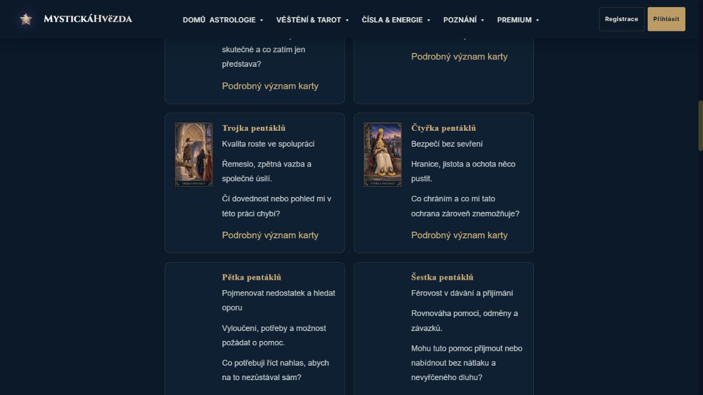
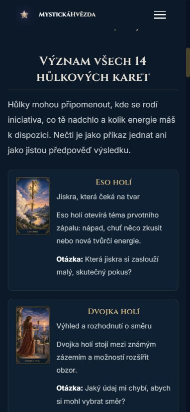
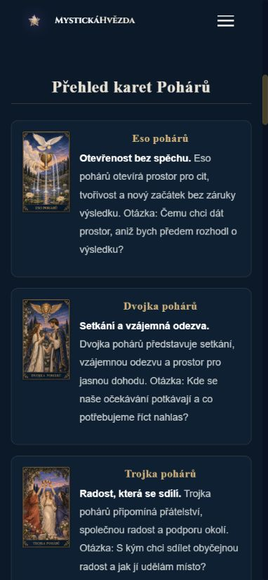
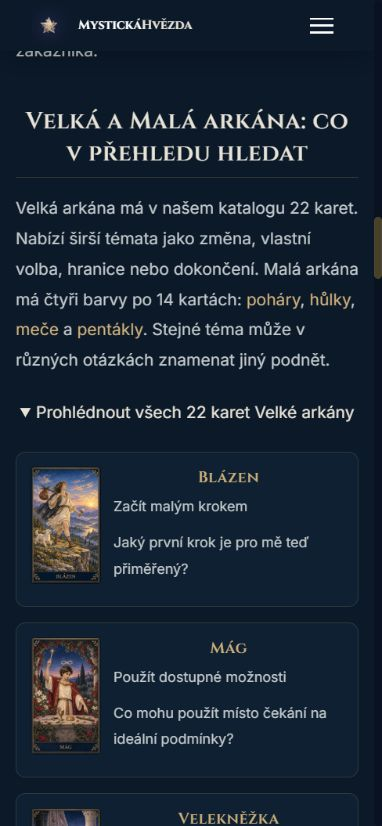
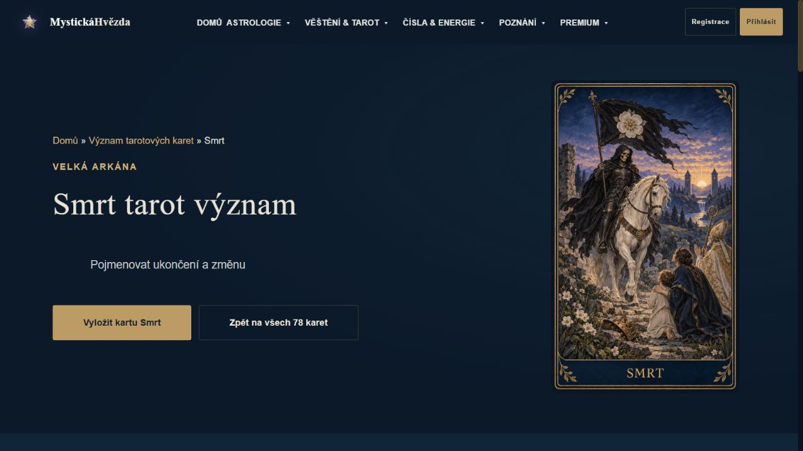
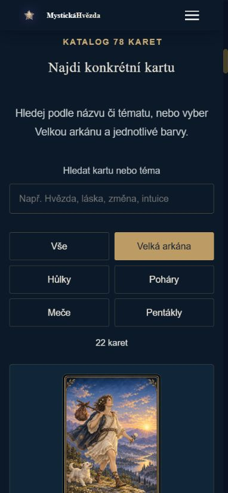

14. ŘÍJNA 2026 · DOKONČENÍ LOKÁLNÍHO OBSAHU
Všech 78 karet v jednom duchu
Konkrétní témata, modelové situace a otázky pro vlastní zamyšlení. Původní malované ilustrace propojené s přehledy a praktickými průvodci.
Katalog a tato dokončovací dávka jsou hotové lokálně. Ověřené texty, metadata, odkazy, desktop a mobil. Nasazení ani SEO výsledky nejsou tímto potvrzené.
78úplných katalogových záznamů
10upravených průvodců v této dávce
77zkontrolovaných produktových HTML
907canonical URL v kandidátní sitemap
Skutečné kontrolní náhledy






Statický izolovaný náhled běží na portu 3345. Tyto kontroly nejsou zákaznický provoz, prodej ani důkaz email delivery. Engine výkladů, losování a práva nebyly touto obsahovou dávkou změněné.